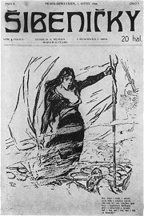
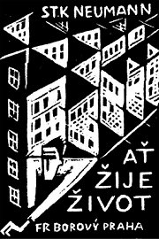
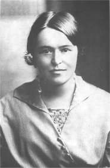
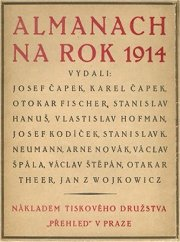

S.K.Neumann

Èasopis Novı kult z roku 1901
|
STANISLAV KOSTKA NEUMANN
* 5. 6. 1875 (Praha)
† 28. 6. 1947 (Praha)
Stanislav Kostka Neumann byl velmi aktivním iniciátorem kulturního a spoleèenského dìní. Sám prošel bouølivım umìleckım i názorovım vıvojem od dekadence a symbolismu pøes anarchismus, vitalismus, naturismus a civilismus a� k proletáøské poezii a komunismu. Byl pøedevším velmi plodnım básníkem a pilnım novináøem. Vydával a redigoval øadu vıznamnıch èasopisù – Novı kult, Šibenièky, Anarchistická revue, Kmen, Èerven, Proletkult...
V pra�ské olšanské vile, kde �il a� do roku 1904, se scházeli mladí anarchisté, napø. jeho pøátelé a souputníci z generace buøièù Šrámek, Toman a Gellner.
Neumann sice pocházel z dobøe situované rodiny pra�ského advokáta a poslance, ale jeho otec brzy zemøel a spisovatel se musel �ivit sám jako redaktor novin a èasopisù. Proto�e se orientoval hlavnì na tiskoviny anarchistické a dìlnické, byl èasto odkázán na finanèní podporu svıch pøíbuznıch nebo pøátel a strávil �ivot v nouzi.
Roku 1894 byl zatèen a ve vykonstruovaném procesu s tzv. Omladinou odsouzen do vìzení. V plzeòskıch Borech strávil 14 mìsícù v samovazbì. Naštìstí byli všichni ze 68 anarchistù, pokrokáøù a mladıch dìlníkù amnestováni ji� v roce 1895, proto�e se jejich obvinìní z tajného spolèování ukázalo jako falešné.
První svìtovou válku strávil jako sanitní vojín na ji�ní frontì v Albánii. Po vzniku samostatné republiky pokraèoval v dráze levicového novináøe, propagoval myšlenky socialismu a komunismu a vstoupil do Komunistické strany Èeskoslovenska. Z ní byl roku 1929 vylouèen, proto�e spoleènì s dalšími šesti spisovateli pozvedl hlas proti novému gottwaldovskému vedení. Jeho obdiv k bolševickému Rusku se ovšem nikterak nezmenšil, jak dosvìdèuje Neumannova kniha Anti-Gide z roku 1937, v ní� ostøe vystoupil proti Gidovì publikaci Návrat ze Sovìtského svazu, která kritizovala pomìry v této zemi a nastupující stalinismus.
|

Neumann na Gellnerovì karikatuøe

Šibenièky
Co víš o anarchismu?
Pùsobí toto hnutí i v souèasnosti? Na co se jeho stoupenci soustøeïují?
|
Dekadence a symbolismus
Ve vìzení se Neumann oddal èetbì. Zaujala ho tvorba autorù z okruhu Moderní revue a inspirovala ho k prvním literárním pokusùm, které shrnul do básnické sbírky Nemesis, bonorum custos (Spravedlnost, ochránkynì dobrıch). Po propuštìní zaèal s èeskımi dekadenty a symbolisty úzce spolupracovat.
Anarchismus a feminismus
Neumannovi se pøíliš nelíbila pasivita ani okázalé estétství dekadentù. Stále více se zajímal o osudy obyèejnıch lidí a dìlníkù. Jeho náhledu na svìt nejvíce odpovídaly myšlenky anarchistù. Zval je do své olšanské vily a všemo�nì je podporoval. Brzy se dostal do jejich èela jako vùdèí osobnost generace buøièù. Neumann se zabıval také feminismem. Pøesto�e jeho vztahy s �enami nebyly prosty konfliktù a jeho rodinnı �ivot byl velice neuspoøádanı, bojoval za práva �en a napsal na toto téma zajímavé knihy jako Dìjiny lásky, Dìjiny �eny nebo Monogamie.
|
S.K.Neumann: Kniha mládí a vzdoru
Neumannovo pojetí dekadence a symbolismu bylo velmi individualistické. Symbolem vzpoury proti zavedenım poøádkùm mu byl Satan. Tato koncepce se odrá�í u� v názvech jeho ranıch básnickıch sbírek – Jsem apoštol nového �ití, Apostrofy hrdé a vášnivé, Satanova sláva mezi námi a Sen o zástupu zoufajících a jiné básnì. Tyto Neumannovy knihy vyšly pozdìji pod spoleènım názvem Kniha mládí a vzdoru.
S.K.Neumann: Sen o zástupu zoufajících a jiné básnì
Vrcholem anarchistické etapy Neumannovy tvorby je sbírka Sen o zástupu zoufajících a jiné básnì (1903). Titulní báseò Sen o zástupu zoufajících popisuje pou� zbídaèenıch lidí, kteøí nejprve hledají zastání u Boha, ale jeho trùn je prázdnı, proto�e „Je mrtev Bùh, a zemì patøí králùm, / králùm, ji� vládnou zlatem a pokrytectvím“. Lidé se tedy obrátí k Satanovi, kterı o sobì øíká: „Já však jsem �ivot, já jsem síla a rozkoš a pıcha a vzpoura / a já �iji ve vás a vy �ijíce �ijete ve mnì“. Velmi známou skladbou z této knihy je rovnì� báseò Stráò chudıch lásek.
|
Almanach secese
Neumannùv organizaèní talent se projevil pøi redigování Almanachu secese (1896). Shromá�dil v nìm tvorbu autorù Moderní revue (Hlaváèek, Karásek, Procházka, Bøezina) a Katolické moderny (Bouška, Dvoøák). Pøispìli do nìj i Zeyer a Dyk. Machar a Sova úèast odmítli.
Novı kult
Neumannùv èasopis Novı kult (1897-1905) se postupnì vyprofiloval jako orgán anarchistického hnutí. Redakce propagovala myšlenku nièím neomezované individuální svobody. Pøíspìvky byly orientovány proti klerikalismu, militarismu, nacionalismu nebo politikaøení levicovıch stran. Hlavním tématem byl boj za lepší postavení dìlníkù a �en.
Jakı je rozdíl mezi slovy kultura a kult?
Jaké je tvoje �ivotní krédo? Zjisti pùvodní vıznam tohoto slova.
Jak na tebe pùsobí Neumannovy básnì?
Pøeèti si celou báseò Sen o zástupu zoufajících.
|
Vitalismus a naturismus
Neumann si udr�el levicové pøesvìdèení po celı �ivot. Ne v�dy mu ale nechával prùchod ve své umìlecké tvorbì. Sbírky, ve kterıch se vyvaroval politické tendenènosti, patøí k nejlepším. Jde o knihy pøírodní (Kniha lesù, vod a strání) nebo milostné (Kniha erotiky) lyriky.

|
S.K.Neumann: Kniha lesù, vod a strání
Básnickou sbírkou Kniha lesù, vod a strání (1914) slo�il Neumann hold pøírodì a jejím krásám. Tato sbírka pøírodní lyriky je pova�ována za vrchol jeho tvorby. Mù�eme v ní najít rysy vitalismu i naturismu.
S.K.Neumann: A� �ije �ivot!
Sta� A� �ije �ivot! z roku 1913 mù�eme oznaèit za èeskı manifest vitalismu. Dala název pozdìjší Neumannovì knize.
|

Mucha: Pøíroda
Jak se ti líbí Neumannovy básnì ze sbírky Kniha lesù, vod a strání?
Najdi v ukázkách rysy jednotlivıch moderních umìleckıch smìrù.
Co je prolog?
Zrekapituluj Neumannovy názory na umìní popsané v manifestu A� �ije �ivot!
Souhlasíš s jejich autorem? Proè?
|
Civilismus
Vedle vitalismu zaujal Neumanna také civilismus. Ten ovlivnil pøedevším básnì shrnuté do sbírky Nové zpìvy, knihu statí A� �ije �ivot! a sbírku fejetonù S mìstem za zády.
|
S.K.Neumann: Nové zpìvy
Básnická sbírka Nové zpìvy vznikla pøed 1. svìtovou válkou, ale vyjít mohla a� na jejím konci (1918). Ústøedním tématem této knihy je oslava moderní civilizace a techniky. Ve vstupním cyklu Zpìvy drátù Neumann velebí technické vıdobytky, které propojují a sjednocují svìt. Následují oddíly Zpìvy svìtel a Zpìvy z ticha (Skøivan). Pozdìji k nim ještì pøibyly Zpìvy z lomozu (Chvála rotaèky, Stavba vodovodu) a Zpìvy pováleèné.
|
Almanach na rok 1914
Nadšení moderní civilizací, optimismus, pozitivní vztah k �ivotu, pøirozené kráse a všedním problémùm sblí�ily Neumanna s nejmladší generaci umìlcù. Ti poprvé vystoupili v Almanachu na rok 1914. K nejvıznamnìjším patøili bratøi Èapkové a Otakar Theer. Vıtvarnı doprovod zajistil kubistickı malíø Špála. Neumann pøispìl do této roèenky básnìmi Dub, Støevlíci a Cirkus.
Srovnej ukázky z Neumannova cyklu Zpìvy drátù s „ideální“ básní citovanou ve verneovce Paøí� ve 20. století.
|
Proletáøské umìní
Neumanna nadchlo vítìzství bolševikù v Rusku a okam�itì se stal pøíznivcem komunismu. Vstoupil do Komunistické strany Èeskoslovenska a zaèal prosazovat vlastní pojetí proletáøského umìní. Na rozdíl od avantgardních spisovatelù a jinıch levicovì orientovanıch autorù zdùrazòoval tendenènost a vìrnost ideologii. Umìlecká kvalita pro nìj nebyla pøíliš dùle�itá, jak je patrné z Rudıch zpìvù. Na historii revoluèních zmìn se zamìøil v knize Francouzská revoluce. Levicovı nádech mají i jeho poslední básnické sbírky – Srdce a mraèna, Sonáta horizontálního �ivota (Staøí dìlníci) a Zamoøená léta.
|
S.K.Neumann: Rudé zpìvy
Rudé zpìvy (1923) dokumentují Neumannùv odklon od myšlenek anarchismu i od umìleckıch zásad vitalismu, naturismu a civilismu. Obsahují tendenèní básnì, ve kterıch se autor vyznává z obdivu ke komunismu, ruské revoluci a Leninovi. Øada básní vyzıvá k násilné revoluci, vzpouøe a otevøenému tøídnímu boji.
|
Èerven a Proletkult
Po vzniku Èeskoslovenska vydával Neumann levicové èasopisy Èerven (1918-1922) a Proletkult (1922-1924). Propagoval v nich hlavnì myšlenky komunismu.
Co si myslíš o básních z Rudıch zpìvù?
Jak Neumann vyu�ívá køes�anskou symboliku?
Proè se jako komunista uchılil k nábo�enskım motivùm?
Jakı je tvùj názor na revoluce a revolucionáøe?
Co si myslíš o komunismu?
|
Bo�ena Neumannová
(1882-1967)
Bo�ena Hodaèová �ila s Neumannem v dobì, kdy vydával èasopis Novı kult a byl plnì oddán myšlenkám anarchismu. V roce 1904 s ním utekla do Vídnì. Kvùli nedostatku penìz se pøestìhovali do Øeèkovic u Brna, odkud byli vypovìzeni za �ivot v konkubinátu. Nakonec zakotvili v nedalekıch Bílovicích nad Svitavou. Bo�ena nìkolikrát Neumanna opustila a navázala intimní vztah s Tìsnohlídkem a Olbrachtem, ale i tyto milostné epizody skonèily rozèarováním. Man�elství uzavøené roku 1915 se rozpadlo u� v roce 1922. Neumannová se �ivila jako novináøka a vydala autobiografické romány Jantarová stezka a Mezi lidmi.
|
Bo�ena Neumannová: Byla jsem �enou slavného mu�e
Vzpomínková kniha druhé man�elky S.K.Neumanna Byla jsem �enou slavného mu�e líèí odvrácenou tváø tohoto spisovatele. Neumannová velmi tì�ce snášela Bouølivákùv bohémskı zpùsob �ivota, vìènou chudobu a èasté hádky. Velmi kriticky se dívá na jeho pøátele – Tomana, Dyka, Gellnera, Majerovou, Demla, bratry Èapky a další vıznamné umìlce.
Vzpomínky Bo�eny Neumannové vznikaly po man�elovì smrti v letech 1948-1951, v dobì totality a Neumannova kultu byly tudí� nepublikovatelné.
|

Co si myslíš o Bo�enì Neumannové?
Mìla si nechat své zá�itky pro sebe?
Domníváš se, �e øíká pravdu? Lze to nìjak ovìøit?
|
Internetové stránky
Neumann, pøehled dìl
Neumann: Kniha lesù, vod a strání, celá sbírka
Exkurze
Øeèkovice u Brna
Bílovice nad Svitavou

Almanach na rok 1914
|
Doporuèená èetba
Kautmann, František: S.K.Neumann, Praha 1966
Lang, J.: Neumannùv Èerven, Praha 1957
Macháèek, Miroslav: Stanislav Kostka Neumann, Praha 1985
Neumann, Stanislav Kostka: Básnì I, SNKLU, Praha 1962
Neumann, S.K.: Dìjiny lásky (5 dílù), Praha 1925
Neumann, S.K.: Dìjiny �eny (4 díly), Praha 1929
Neumann, S.K.: Francouzská revoluce (3 díly), Praha 1929
Neumann, S.K.: Chvála pozemskosti, Odeon, Praha 1981
Neumann, S.K.: Kniha lesù, vod a strání, Odeon, Praha 1972
Neumann, S.K.: Konfese a konfrontace (2 svazky), Èeskoslovenskı spisovatel, Praha 1988
Neumann, S.K.: Nové zpìvy, Rudé zpìvy, Anti-Gide, Orbis, Praha 1953
Neumann, S.K.: Podaná ruka, Mladá fronta, Praha 1962
Neumann, S.K.: Sám nejsi nic, Èeskoslovenskı spisovatel, Praha 1975
Neumann, S.K.: Vzpomínky, Svoboda, Praha 1948
Neumannová, Bo�ena: Byla jsem �enou slavného mu�e, Host, Praha 1998
Sebrané spisy S.K.Neumanna (23 svazkù), Svoboda, pak Èeskoslovenskı spisovatel, Praha 1948-56
Taufer, Jiøí: Stanislav Kostka Neumann, Básník, jeho doba a odkaz, Èeskoslovenskı spisovatel, Praha 1975
|
Vypracuj písemnı referát o nìkteré z uvedenıch knih.

Obálka Neumannovy básnické sbírky Satanova sláva mezi námi
|
|